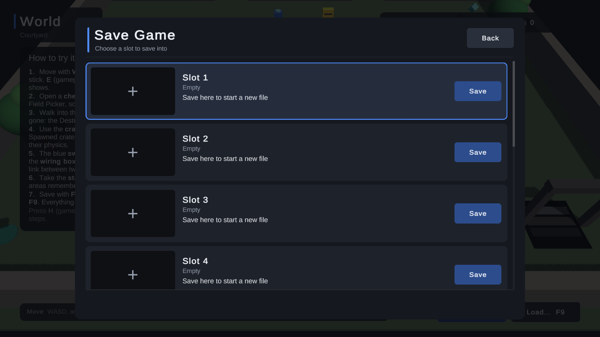

Walkthrough: the save and load menu
A finished menu for your players: slots with pictures, dates and playtime, autosaves, confirmations, and mouse, keyboard and gamepad control. This page adds it, opens it from your own UI and restyles it.
1. Add it #
In the Start window, choose Add a save/load menu, pick where the F5 / F9 test hotkeys work (Editor only is the safe choice) and click Add the save menu. The Setup Wizard's Menu and hotkeys step does the same. To do it by hand, drag UI/Prefabs/SaveMenu.prefab into the scene; it stays hidden until something opens it.
The menu's text uses TextMesh Pro. If the text does not show, click Import TMP Essentials in the Start window.
2. Try it #
Press Play, then F5 for the Save menu:

An empty slot saves at once; a used one asks "Overwrite?" first. A picture of the game is taken just before the menu shows. Press F9 for the Load menu:

It lists the autosaves first, newest first, then the quicksave if you use one, then your slots. Loading asks first whether unsaved progress may be lost. A damaged save shows a Damaged badge; with the default settings, loading it uses its newest good backup (Backups and recovery).
3. Open it from your own menu #
The F5 / F9 hotkeys are for testing. In your game, open the menu from a pause menu button:
using AllInOneSaveKit.UI;
using UnityEngine;
public class PauseMenu : MonoBehaviour
{
[SerializeField] SaveMenu saveMenu;
public void OnSaveButton() { saveMenu.Open(SaveMenuMode.Save); }
public void OnLoadButton() { saveMenu.Open(SaveMenuMode.Load); }
}
When the menu closes, the selection goes back to whatever was selected before, such as your Save button, so gamepad players are never lost. If your pause menu also listens for Escape, see Controls so one key press does not close both.
4. Choose what each card says #
Each card shows a location and summary lines, such as "Gold 100 · Ada". Set them before saving, for example whenever they change:
SaveKit.Location = "Courtyard";
SaveKit.SetSummary("Gems 3 / 8", "Gold 120, crates 2");
The World demo does exactly this (Slots and slot info).
5. Make it yours #
Open Tools → All In One Save Kit → Menu Style, or click Make it yours in the Start window. It finds the menu in the open scene and shows a live preview beside its tabs:
- Style: click Use on one of six looks: Dark, Light, Fantasy, Sci-fi, Cozy or Minimal.
- Colours and Text and shape: change any colour, the font, the sizes and the corners.
- Layout: switch the list to a grid of 2 to 4 tiles, hide the details your game does not use, move the panel to the left or right, and set its width.
- Words: rewrite any line, then click Save as my text.
- Share: export the whole style to a
.jsonfile to use in another game.
Everything goes into your own copy in Assets/AllInOneSaveKitData/Menu, never the kit's assets, and each step is one Edit → Undo. The Guide has the details. For a menu that is wholly your own, see Use your own menu.
Next: Game updates.